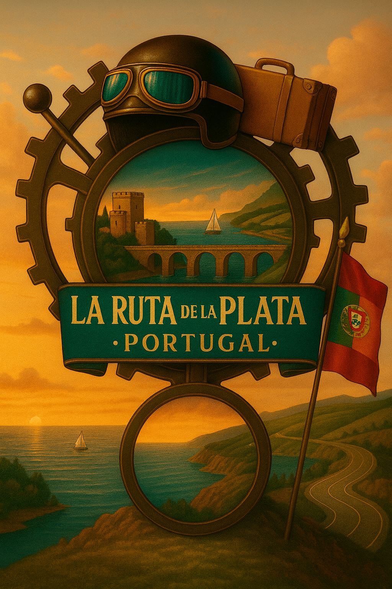

DESUBICA2 - VIAJA Y EXPLORA
☰
INICIO
RUTAS
MARRUECOS INTERIOR
RUTA DEL SILENCIO
LA FLOR DE TERUEL
RUTA DE LA PLATA + PORTUGAL
CONTENIDO LEGAL
FOTOS
VIDEOS
RUTA EN MOTO POR MARRUECOS INTERIOR
PROXIMAMENTE 15/10/2026
VER RUTA
RUTA DEL SILENCIO - THE SILENT ROUTE
PROXIMAMENTE
VER RUTA
RUTA EN MOTO POR LA FLOR DE TERUEL
PROXIMAMENTE
VER RUTA
RUTA EN MOTO - RUTA DE LA PLATA + PORTUGAL

PROXIMAMENTE
VER RUTA
 PROXIMAMENTE
PROXIMAMENTE